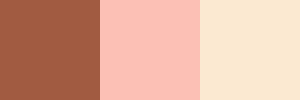

Drawing Simple Rectangles in PIL
Quick Color Checks
When I found myself doing analysis on color using numpy, I kept getting turned around and having trouble conceptualizing the color representation for the R, G, B values I was seeing.
PIL makes this really easy to do. All you have to do is call Image.new() and specify the color parameter accordingly.
from PIL import Image
rect = Image.new(mode='RGB', size=(200, 200),
color=(0, 74, 127))
rectLayering in More Colors
If we wanted to look at more colors than one at a time, we could probably leverage some matplotlib “span” method, or use the built-in tools that PIL provides.
Specifically, we’ll leverage the ImageDraw.Draw object, which takes an existing Image object.
from PIL import ImageDrawdrawer = ImageDraw.Draw(rect)Which gives us access to a ton of simple drawing utillities.
print([x for x in dir(drawer) if x[0] != '_'])['arc', 'bitmap', 'chord', 'draw', 'ellipse', 'fill', 'font', 'fontmode', 'getfont', 'im', 'ink', 'line', 'mode', 'multiline_text', 'multiline_textsize', 'palette', 'pieslice', 'point', 'polygon', 'rectangle', 'shape', 'text', 'textsize']
Note how we leverage the rectangle() method below.
def draw_rectangle(color_list):
'''
Make a long rectangle, composed of the colors
detailed in color_list, a list of (R, G, B) tuples
'''
n = len(color_list)
im = Image.new('RGBA', (100*n, 100))
draw = ImageDraw.Draw(im)
for idx, color in enumerate(color_list):
# ensure that numbers are all ints
color = tuple([int(x) for x in color])
# draw the colors by array-indexing
draw.rectangle([(100*idx, 0), (100*(idx+1), 100*(idx+1))],
fill=tuple(color))
return imneapolitan = ([161, 91, 65],
[252, 192, 181],
[251, 233, 209])
draw_rectangle(neapolitan)